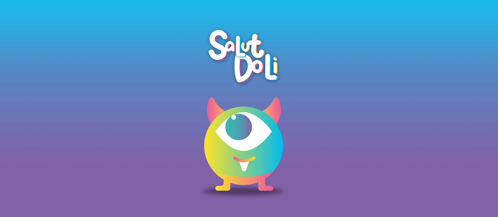

Comment expliquer le tri à des enfants de 3 à 6 ans ? Pas avec des schémas ni de grands discours. Le défi : leur faire comprendre, en quelques secondes, qu'un déchet ne disparaît pas. Il devient autre chose. Un nouvel objet, à chaque fois.
On a donné un visage à l'idée : Doli, un petit monstre attachant qui se nourrit de déchets. Douze illustrations, douze bouchées : Doli avale un déchet, et recrache un objet tout neuf. Des mini-vidéos de 8 à 15 secondes, le temps d'attention d'un enfant de 4 ans, pas une de plus. Le déchet entre, l'objet ressort.
Douze mini-films ludiques où Doli avale les déchets et les transforme en objets neufs. Le tri, version magique.
Douze mini-films, un petit monstre qui avale les déchets, et une idée gravée chez les tout-petits : rien ne se perd, tout se transforme. Le tri n'est plus une corvée qu'on explique, c'est un tour de magie qu'on a envie de revoir.